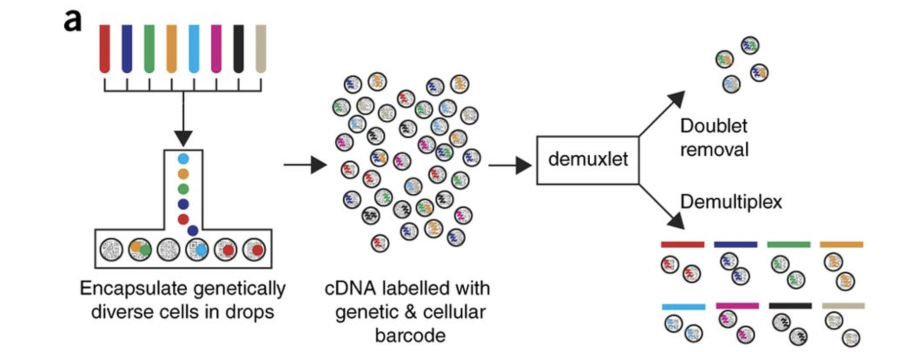

single_cell_rnaseq/
├── data
├── results
└── figuresQuality Control Setup
Approximate time: 90 minutes
Learning Objectives:
- Demonstrate how to import data and set up project for upcoming quality control analysis.
Single-cell RNA-seq: Quality control set-up

After quantifying gene expression we need to bring this data into R to generate metrics for performing QC. In this lesson we will talk about the format(s) count data can be expected in, and how to read it into R so we can move on to the QC step in the workflow. We will also discuss the dataset we will be using and the associated metadata.
Exploring the example dataset
For this workshop we will be working with a single-cell RNA-seq dataset which is part of a larger study from Kang et al, 2017. In this paper, the authors present a computational algorithm that harnesses genetic variation (eQTL) to determine the genetic identity of each droplet containing a single cell (singlet) and identify droplets containing two cells from different individuals (doublets).
The data used to test their algorithm is comprised of pooled Peripheral Blood Mononuclear Cells (PBMCs) taken from eight lupus patients, split into control and interferon beta-treated (stimulated) conditions.

Image credit: Kang et al, 2017
Raw data
This dataset is available on GEO (GSE96583), however the available counts matrix lacked mitochondrial reads, so we downloaded the BAM files from the SRA (SRP102802). These BAM files were converted back to FASTQ files, then run through Cell Ranger to obtain the count data that we will be using.
Note
The count data for this dataset is also freely available from 10X Genomics and is used in the Seurat tutorial.
Metadata
In addition to the raw data, we also need to collect information about the data; this is known as metadata. There is often a temptation to just start exploring the data, but it is not very meaningful if we know nothing about the samples that this data originated from.
Some relevant metadata for our dataset is provided below:
The libraries were prepared using 10X Genomics version 2 chemistry
The samples were sequenced on the Illumina NextSeq 500
PBMC samples from eight individual lupus patients were separated into two aliquots each.
- One aliquot of PBMCs was activated by 100 U/mL of recombinant IFN-β for 6 hours.
- The second aliquot was left untreated.
- After 6 hours, the eight samples for each condition were pooled together in two final pools (stimulated cells and control cells). We will be working with these two, pooled samples. (We did not demultiplex the samples because SNP genotype information was used to demultiplex in the paper and the barcodes/sample IDs were not readily available for this data. Generally, you would demultiplex and perform QC on each individual sample rather than pooling the samples.)
12,138 and 12,167 cells were identified (after removing doublets) for control and stimulated pooled samples, respectively.
Since the samples are PBMCs, we will expect immune cells, such as:
- B cells
- T cells
- NK cells
- monocytes
- macrophages
- possibly megakaryocytes
It is recommended that you have some expectation regarding the cell types you expect to see in a dataset prior to performing the QC. This will inform you if you have any cell types with low complexity (lots of transcripts from a few genes) or cells with higher levels of mitochondrial expression. This will enable us to account for these biological factors during the analysis workflow.
None of the above cell types are expected to be low complexity or anticipated to have high mitochondrial content.
Set up
For this workshop, we will be working within an RStudio project. In order to follow along you should have downloaded the R project.
Important
If you haven’t done this already, the project can be accessed using this link.
TODO: download instructions
Project organization
One of the most important parts of research that involves large amounts of data, is how best to manage it. We tend to prioritize the analysis, but there are many other important aspects of data management that are often overlooked in the excitement to get a first look at new data. The HMS Data Management Working Group, discusses in-depth some things to consider beyond the data creation and analysis.
One important aspect of data management is organization. For each experiment you work on and analyze data for, it is considered best practice to get organized by creating a planned storage space (directory structure). We will do that for our single-cell analysis.
Look inside your project space and you will find that a directory structure has been setup for you: